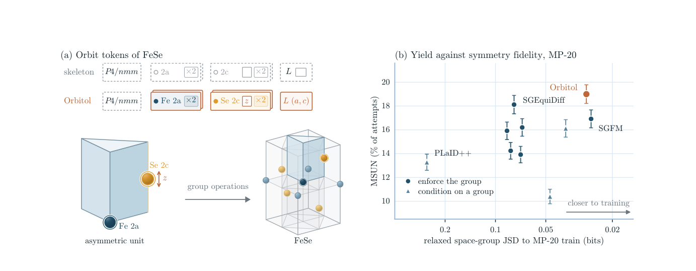
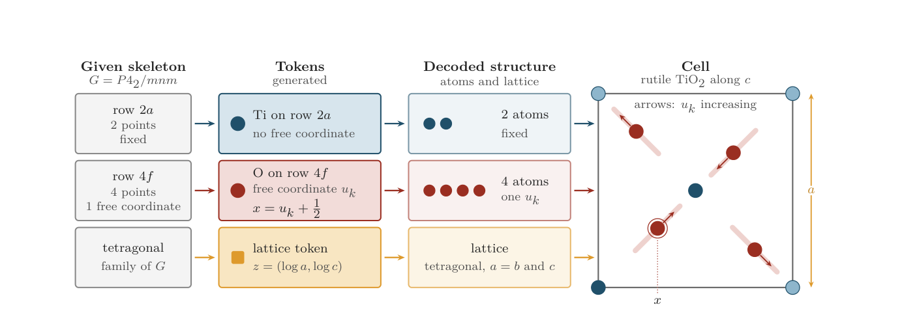
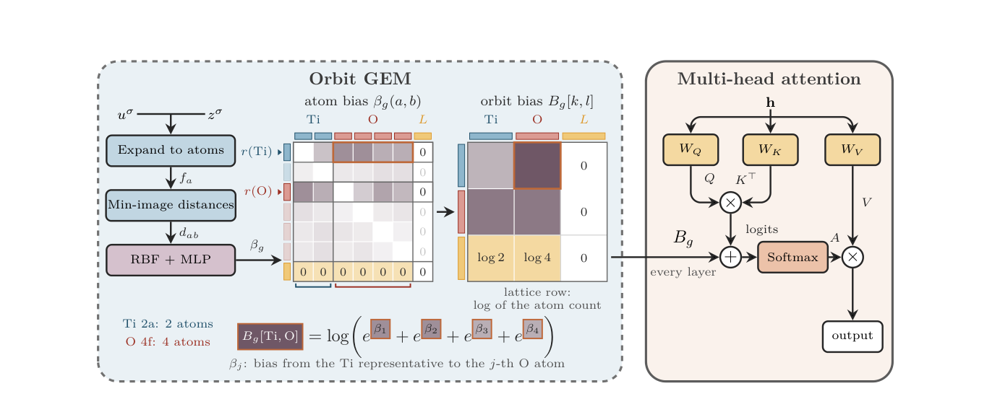
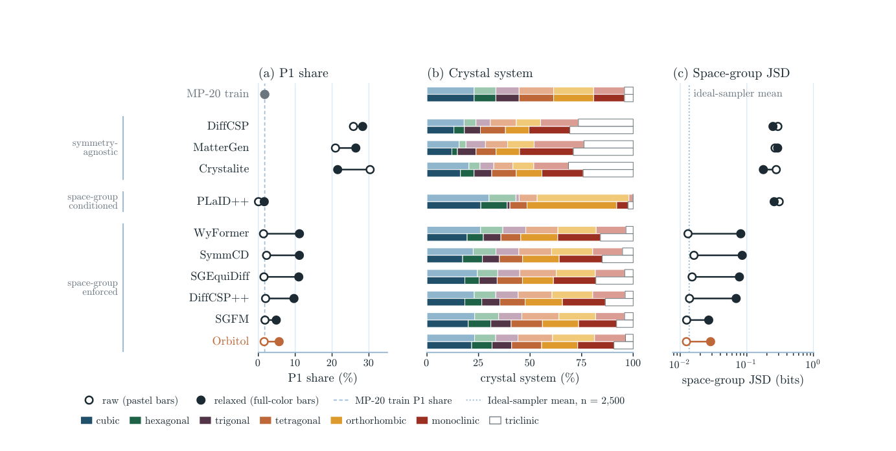
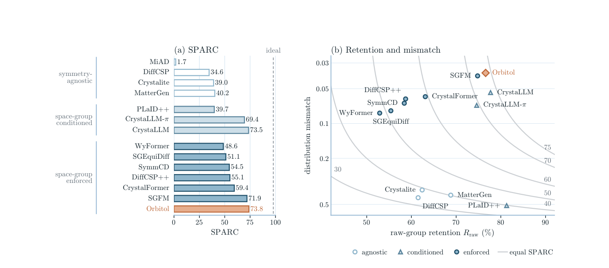
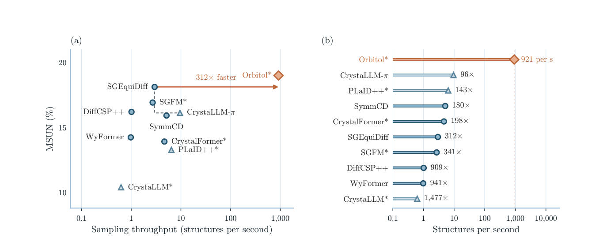
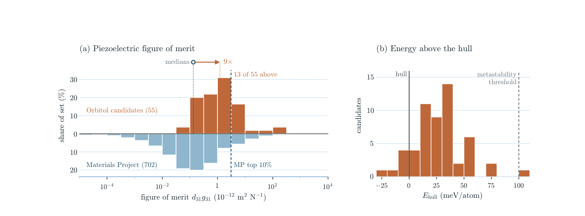

Orbitol：把晶体对称性写进生成过程，直接寻找压电候选材料
论文原文 ↗原文：Ivan Žugec、Joshua Rosenthal、Ivor Lončarić、Jan-Willem van de Meent、Tin Hadži Veljković，Orbitol: Crystal Generation on Wyckoff Orbits，arXiv，2026年10月。官方页面｜原始 PDF
压电材料在受到机械作用时产生电响应，可用于传感和能量采集。能否出现这种响应，首先受到晶体对称性的约束：具有反演中心的晶体不允许体相压电性；20种非中心对称晶类允许这一响应。因而，寻找压电材料时，生成模型需要能直接控制空间群，而不仅是提出看起来合理的原子排列。
许多晶体生成模型把每个原子独立表示，生成元素、坐标和晶胞。它们可以学到常见结构，却不能为每个输出明确指定空间群。仅给模型一个空间群标签，也未必能让坐标和晶胞同时满足其对称操作。Orbitol 的办法是：把由对称性关联的一整组原子表示为一个单元，只生成其中真正自由的变量，再用空间群操作展开成完整晶体。 作者在 Crystalite 扩散 Transformer 的基础上实现了这种生成方式，并将其用于压电材料筛选。

图1｜左侧以 FeSe 为例：给定空间群和占据位置，模型生成轨道的元素、自由坐标及晶格参数；右侧同时比较新结构产率与空间群分布。
一、Wyckoff 轨道是什么，为什么它能控制整个晶体
这里的“轨道”指对一个位置施加空间群操作后得到的所有等价位置。例如，一个原子经旋转、镜面或螺旋操作映射到晶胞中的其他原子，它们就属于同一个轨道。由于对称操作保持元素身份，这些位置由同一种元素占据。
晶体学中的 Wyckoff 位置表列出了每个空间群允许的不同位置族。标签“4f”中的4表示常规晶胞内有4个等价位置，字母 f 区分该位置族。有的位置完全固定，有的只允许沿一条线移动，有的有两个或三个自由坐标。选择具体自由坐标后，就确定了这一族中的一个轨道。
以金红石 TiO₂ 为例，空间群 P4₂/mnm 的2a位置给出两个固定点，由 Ti 占据；4f位置由 O 占据，四个 O 的坐标共同取决于一个数 x。其中一个代表位置是 (x,x,0)，其余三个由对称操作得到。改变 x 时，四个 O 一起沿各自允许的方向移动，空间群关系一直保留。四方晶胞又要求 a=b、三个角为直角，因此晶格只需生成 a 和 c。

图2｜给定 P4₂/mnm 和2a、4f两个占据位置，模型生成两种元素、一个 O 的自由坐标和两个晶格长度，随后展开得到六原子晶胞。
作者把“空间群＋被占据的 Wyckoff 位置列表”称为 skeleton，即晶体骨架。骨架决定有几个轨道、每个轨道对应多少原子、哪些方向可以改变；元素种类、自由坐标和晶胞大小由模型产生。例如，在金红石所用骨架上生成 Ti 和 O 后才得到对应组成，骨架本身没有预先指定这两种元素。
二、骨架从哪里来，训练与生成分别做什么
从已有晶体抽取无元素骨架，再学习如何填充
训练数据来自 MP-20 和 Alex-MP-20，两者都限制晶胞原子数不超过20；后者结合 Materials Project 与 Alexandria 数据。预处理把已有晶体标准化，识别空间群和 Wyckoff 轨道，再将元素、自由坐标和晶格整理成训练表示。MP-20 的轨道训练缓存含27,136个结构、3,290种不同骨架。
生成时，论文按这些骨架在训练集中的频率抽样。抽取的条件只有空间群及无元素的占据位置列表，随后重新生成元素和几何。压电应用则把可抽取范围限定到允许压电性的晶类。这样，研究目标先决定可以使用哪些对称性，再由模型在相应骨架中提出候选。
训练时对自由变量加噪，模型学习恢复
Orbitol 为每个轨道建立一个 token，即 Transformer 处理的一个表示单元，再加一个晶格 token。每个轨道单元包含元素编码、该位置族的身份，以及代表原子的自由坐标；晶格单元包含与空间群相容的晶胞信息。
训练把噪声同时加入元素表示、自由坐标和自由晶格参数，要求网络恢复干净状态。没有自由坐标的固定位置不加坐标噪声；一个参数控制多个原子移动时，噪声尺度按这些原子的实际位移关系调整。空间群和 Wyckoff 位置列表在整个加噪、去噪过程中保持固定。
坐标还具有周期性：相差一个整数的分数坐标代表相同位置。作者因此构造周期后验目标，在训练时对等价的周期镜像按概率加权，让网络预测去噪所需的平均位置；坐标更新也按周期回到晶胞内。晶格则只更新自由参数，固定角度和相等轴长按晶系规则补回。
单元变少之后，仍要看见所有原子的几何关系
把四个 O 合成一个单元能减少序列长度，但模型仍需要知道 Ti 到不同 O 的距离。作者改造 Crystalite 的几何增强模块：暂时展开轨道中的原子，计算周期晶胞内的距离，把距离转换成注意力权重，再汇总为轨道之间的权重。
例如，Ti 单元看向 O 单元时，合并的是 Ti 代表原子到四个 O 的贡献之和。Transformer 处理的仍是较短的轨道序列，几何信息则来自完整的原子集合。

图3｜先从带噪轨道展开原子、计算距离，再把同一轨道成员的注意力贡献合并，送入每一层 Transformer。
实际生成从随机噪声开始，在给定骨架条件下逐步去噪，得到元素、自由坐标和晶格。解码器根据 Wyckoff 表确定全部原子位置，再转换成原胞。这样，合法输出天然包含所请求空间群的对称操作。随后进行无对称约束的结构优化，检验这些结构在降低能量后是否仍保留目标空间群。
三、结果：同时提高可用候选产率、对称性保留和生成速度
1. 每2500次尝试中，13.8%同时满足新结构与目标空间群要求
在 MP-20 比较中，每个模型使用前2500次生成尝试。结构由 NequIP-OAM-L 机器学习势进行500步无对称约束优化，再用 LeMat-GenBench 的多模型能量评价与结构匹配判断稳定性和新颖性。
作者使用 MSUN 表示：结构有效、在本批次中独特、相对参考库新颖，且预测高于凸包的能量不超过0.1 eV/atom，因而包含稳定及亚稳候选。高于凸包的能量衡量该结构相对竞争分解相的能量代价。“联合产率”进一步要求优化后的空间群与请求空间群完全一致。
| 模型 | MSUN，占全部尝试 | 联合产率，占全部尝试 | 请求空间群保留率，占全部尝试 |
|---|---|---|---|
| SGEquiDiff | 18.1% | 8.1% | 54.7% |
| SGFM | 16.9% | 10.8% | 73.4% |
| Orbitol | 19.0% | 13.8% | 74.7% |
Orbitol 的19.0% MSUN是所评估对称性感知模型中最高的；把材料产率和指定对称性同时考虑，联合产率由次优 SGFM 的10.8%提高到13.8%。这些比例以全部尝试为分母，生成失败也在其中。

图4｜空心和实心点分别表示生成后与无约束优化后的结果；三列分别比较 P1 比例、晶系分布和空间群分布与训练集的差异。
作者也考察模型是否只集中生成少数容易保留的空间群。提出的 SPARC 将“原始空间群经过优化后保留的比例”与“保留结构对训练空间群分布的覆盖程度”相乘。Orbitol 得分73.8，SGFM 为71.9，CrystaLLM 为73.5。这个指标把保留对称性和覆盖不同类型结构放在同一张图里。

图5｜左侧是综合分数，右侧拆开空间群保留率和分布差异；更靠右上方表示两方面同时较好。
2. 在报告的采样设置下，单卡每秒生成约920个结构
在一张 RTX 6000 Ada 上，Orbitol 用25步 Heun 采样，每秒生成约921个结构；SGEquiDiff 约为3个，因此约快312倍。计时从先验抽样到解码后结构，结构优化另行进行。
速度来自几项配合：一个轨道对应一个单元，MP-20平均从10.4个原子缩减到4.70个轨道；将不同晶体紧密打包，减少填充；使用编译后的 GPU 执行及向量化解码；同时采用较短的采样过程。它把高通量生成变成可以用于后续大规模性质筛选的入口。

图6｜左图同时比较 MSUN 和生成吞吐量，右图列出相对各对照的速度；Orbitol 的采样与实现共同带来高吞吐量。
四、压电筛选：从允许的晶类走到 DFT 响应
作者从允许压电性的20种晶类中抽取骨架、生成候选，先进行机器学习势优化，保留空间群没有改变且预测凸包能量在0.1 eV/atom以内的结构。随后用内部机器学习筛选流程预测压电性能，选择62个高分候选进入 DFT。
性能目标是横向能量采集指标 d₃₁g₃₁：d反映机械应力引起的电荷响应，g反映相应电压响应，两者的乘积综合体现压电转换与介电性质。作者根据弹性、介电和压电张量，在不同晶体取向中寻找这一指标的最大值，并以同样方式处理 Materials Project 中702种有非零压电张量的材料。
62个候选中，4个因 PBE 带隙不超过0.03 eV而不进入响应计算。余下58个进行 PBE结构优化、弹性计算及密度泛函微扰理论（DFPT）介电、压电计算，并检查 Γ 点光学声子与弹性张量。最终55个同时通过这两项检查，即最初62个筛选候选的约89%。其中49个与 MP、Alexandria 中同空间群的结构不匹配，占最初62个的约79%。

图7｜左侧比较通过检查的55个候选与702种 MP 材料的取向优化性能指标，右侧给出这55个候选的 DFT 凸包能量。
55个候选的性能指标中位数为1.23×10⁻¹² m²/N，MP 对照为0.133×10⁻¹² m²/N，约相差9倍。55个中有13个超过 MP 的第90百分位；聚焦49个不匹配已有同空间群结构的新候选，其中12个超过这一阈值，即 12/49≈24%。这些候选经过了高预测指标预筛选，MP 对照则是数据库中具有相应张量的材料集合。
能量评价上，55个中54个的 DFT 凸包能量不超过0.1 eV/atom，46个不超过50 meV/atom，6个在凸包上或以下，中位数为27 meV/atom。这将所生成的压电响应与竞争相能量联系起来，使对称性约束不只停留在结构形式上，而是接到具体功能候选及其第一性原理评价。
五、这项工作带来的能力
Orbitol 把“指定对称性”转成一种紧凑、可生成的晶体表示：空间群和占据位置确定结构规则，模型学习其中的元素与自由几何，解码时展开全部原子。这样既能直接选择功能响应允许的晶类，又能减少生成时需要处理的独立变量。
压电应用展示了这套表示的用途：先用物理对称性确定搜索范围，再用快速生成与性质预测集中候选，最后用 DFT 的稳定性和响应计算落实。对其他受到对称性约束的材料功能，这种把晶体学规则放进生成表示的方式提供了清晰的方法入口。
原始摘要完整中文翻译
生成模型通过学习组成和几何提出晶体材料，但无条件采样无法直接控制空间群，而空间群约束着压电性等响应是否在对称性上被允许。我们提出 Orbitol：一种基于 Crystalite 扩散 Transformer 的晶体生成器，将原子 token 替换为 Wyckoff 轨道 token。给定空间群和一组被占据的 Wyckoff 位置，Orbitol 为每个轨道生成原子类型和自由坐标，同时生成相容的晶格，因此每个合法结构在所请求空间群的操作下都保持不变。
在所评估的设置下，它生成结构的速度比对称性感知的对照模型快两到三个数量级。在 MP-20 上，Orbitol 的13.8%生成尝试得到了稳定或亚稳、独特、新颖，且在结构优化后仍保留请求空间群的结构；次优模型 SGFM 的比例为10.8%。我们还提出 SPARC 分数，将原始检测空间群的保留情况，与保留结构的空间群分布和训练分布的一致程度结合起来。
最后，我们使用 Orbitol 在压电晶类中生成候选。在通过内部筛选选出的结构中，89%通过我们的密度泛函理论检查，79%还与 Materials Project 或 Alexandria 中同空间群的任何条目都不匹配。这些候选的性能指标中位数是 Materials Project 中经计算压电材料的9倍，24%的新候选排进该集合的前10%。